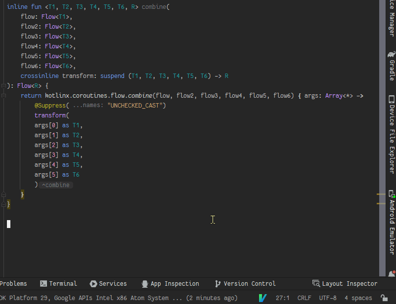
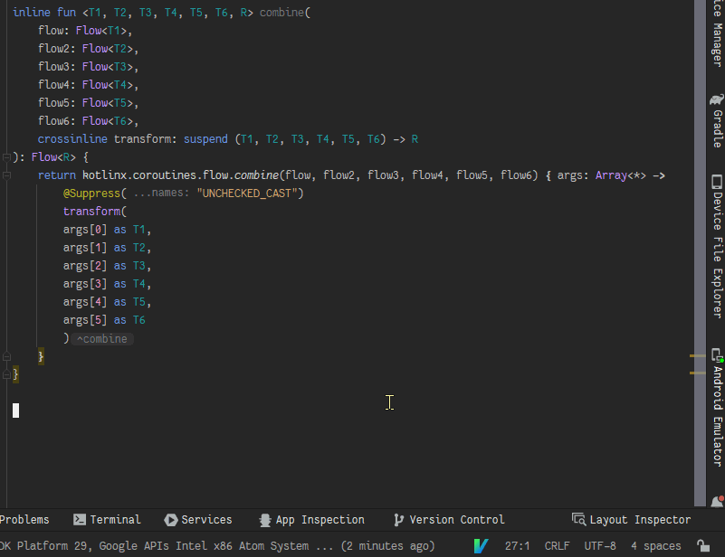

Why I like Vim - part 1
2023-03-27
Having used Vim, Neovim, VsVim, VsCodeVim, vi(m) bindings in terminals and IdeaVim (JetBrains), it's a tool I've really come to enjoy.
For the most part, I use it because I think it's fun. However, it can often be more ergonomic as well due to requiring fewer keystrokes to perform some tasks.
Especially using macros.
One such case came up today.
While working on my app (Norwegian vocabulary helper thing), I had a use for some kotlinx.coroutines.flow.combine functions that take more than 5 parameters.
This is how running the macro ended up looking, generating one implementation as a test and then 5 more:

This can of course be done using other means, it's more to give an idea of what vim is capable of. :-)
How was it done in Vim? By going to the last line in the file and typing the following:
What does that mean? Something like:
How long did it take to come up with that combination? That's not the point - even if it had been quicker to just write the 6 implementations by hand, it would have been worse for my wrists. And less fun.
However, having used vim for some years now, this macro was definitely/probably quicker to come up with and type out.
That's pretty much it, I hope you take this opportunity to try Vim if it seems at all fun or interesting!
Or don't, it's really not important. :-)
Other interesting editors:
For the most part, I use it because I think it's fun. However, it can often be more ergonomic as well due to requiring fewer keystrokes to perform some tasks.
Especially using macros.
One such case came up today.
While working on my app (Norwegian vocabulary helper thing), I had a use for some kotlinx.coroutines.flow.combine functions that take more than 5 parameters.
This is how running the macro ended up looking, generating one implementation as a test and then 5 more:

{kind=link}
This can of course be done using other means, it's more to give an idea of what vim is capable of. :-)
How was it done in Vim? By going to the last line in the file and typing the following:
qe?}<cr>V%0%yGpf>F,byiwea, <esc>p^a$%2kA<esc>Yp^aw^ajf)byiwea, <esc>p^a2jf)byiwea, <esc>p^af{%2kYpkA,<esc>j0^ae^a3j%%2j@e5@e
What does that mean? Something like:
<cr> = enter, <esc> = escape
qe - start recording a macro in register "e"
?}<cr> - search backwards for "}"
V - start selecting lines
% - jump to matching pair of (), {}, [], etc
0 - go to the start of the line
%
y - yank selection (copy selection to a vim register)
G - go to the last line in the file
p - paste from a vim register
f> - search forwards for ">" on current line
F, - search backwards for "," on current line
b - move back a word
yiw - yank in word (copy current word)
e - move to the end of the current word
a, <esc> - append ", "
p
^a - move to the first number to the right on the current line and increment that number
$ - move to the end of the current line
% - jump to matching pair
2k - move up 2 lines
A<esc> - hit the wrong key by mistake
Y - yank current line
p - paste
^a
w - move forward a word
^a
j - move down a line
f) - search forwards for ")" on current line
b - move back a word
yiw - yank in word
e - move to the end of the current word
a, <esc> - append ", "
p
^a
2j - move down 2 lines
f) - search forwards for ) on current line
b
yiw
e
a, <esc>
p
^a - increment next number on line
f{ - search forwards for "{" on current line
% - jump to matching pair
2k - move up 2 lines
Y - yank current line
p - paste
k
A,<esc> - append ","
j - move down a line
0 - go to the start of the line
^a
e - move to the end of the current word
^a
3j
% - jump to matching pair for no reason
% - jump back to undo previous mistake
2j - move enough to stop at the end of the new implementation, so that the macro is repeatable
@e - run the macro in register "e" to see if it works
5@e - run the macro 5 more times
How long did it take to come up with that combination? That's not the point - even if it had been quicker to just write the 6 implementations by hand, it would have been worse for my wrists. And less fun.
However, having used vim for some years now, this macro was definitely/probably quicker to come up with and type out.
That's pretty much it, I hope you take this opportunity to try Vim if it seems at all fun or interesting!
Or don't, it's really not important. :-)
Other interesting editors: